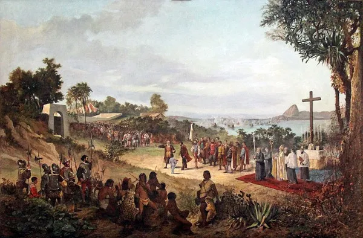

Identidade nacional
Relacionada com o sentimento de pertença a um país. Inclui símbolos nacionais, língua oficial, tradições, história e valores partilhados.
Relacionada com o sentimento de pertença a um país. Inclui símbolos nacionais, língua oficial, tradições, história e valores partilhados.
Baseada na origem comum de um grupo, inclui características como língua, religião, costumes, rituais e práticas culturais transmitidas entre gerações.
Resulta das práticas sociais, expressões artísticas, modos de vida, gastronomia, música, crenças e normas que caracterizam um grupo ou sociedade.
Formada por características pessoais, experiências, opiniões, valores, família, educação e influências sociais. É única e está sempre em transformação.
Impactou profundamente povos e culturas, alterando línguas, religiões e estruturas sociais. Muitas identidades atuais resultam do encontro e conflito entre culturas colonizadoras e colonizadas.

O movimento de pessoas entre países cria comunidades multiculturais. Migrantes desenvolvem identidades híbridas, misturando elementos da cultura de origem e da cultura de acolhimento.
O local onde se vive e os recursos disponíveis influenciam estilos de vida, oportunidades e valores culturais.